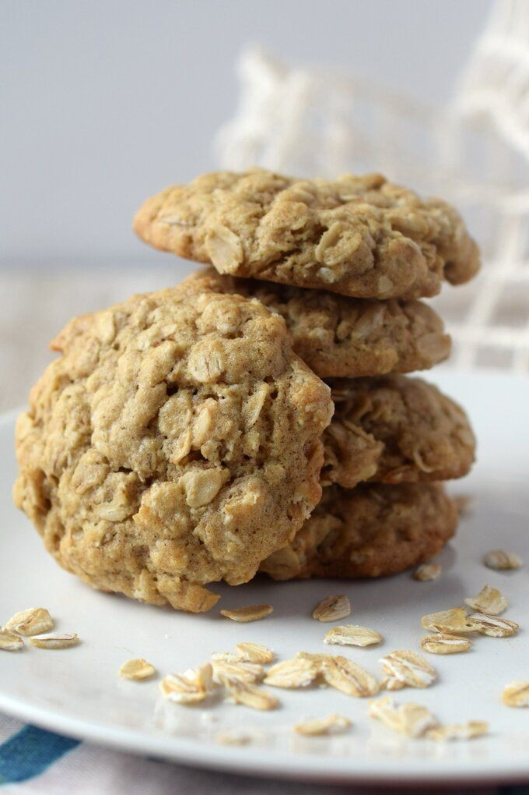

Ingredients list
- 300 g of oatmeal
- 4 tablespoons flour
- 160 g butter
- 8 tablespoons sugar
- 2 eggs
- lemon peel
- 2 teaspoons baking powder
- 150 g raisins
Steps for cooking recipe
- Sift oatmeal in a pan and toast half of the butter.
- Rest of butter, whipped with sugar.
- Add grated leamon peel
- Add whipped egg, keep for some time at room temperature and mix
- Sift and mix the baking powder with the flour. Add to the mixture
- Stir in the cooled oatmeal
- Finally, stir in the raisins
- Place the dough with two teaspoons on a baking pan lined with baking sheet. Bake in a preheated oven at 180 degrees for about 20 minutes - until the biscuits have turned light brown.
Return to top
To Main Page